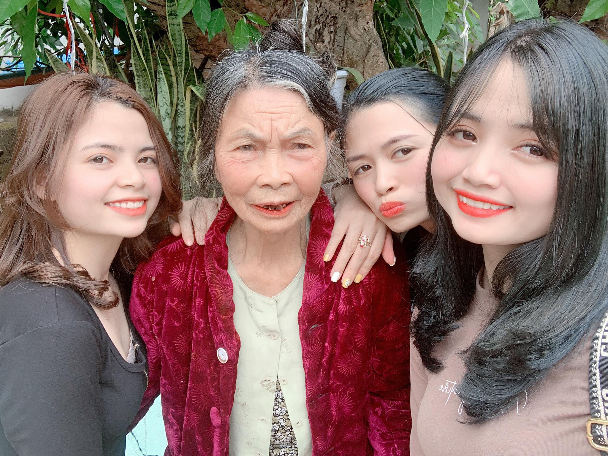

Cuộc gặp gỡ của bố Hưng mẹ Thơ là khởi đầu cho tình yêu
Tình yêu của bố mẹ là khởi đầu của hạnh phúc
Hạnh phúc của gia đình ta đơn giản chính là được ở bên nhau
20-10-2021

Hành trình tình yêu của bố Hưng mẹ Thơ
Bố 19 tuổi - cái tuổi mà tràn đầy sự nhiệt huyết của tuổi trẻ
Ngày 20,tháng 10,năm 1989
Năm ấy mẹ cũng 19 tuổi - độ tuổi nở rộ nhất của cuộc đời người con gái
Ngày 20,tháng 10,năm 1989
Hai con người tuyệt vời đó đã đến với nhau và đi đến hôn nhân^^
Ngày 6,tháng 10,năm 1990
Thúy Lê là sản phẩm đầu tiên của bố mẹ đã được ra đời
Ngày 26,tháng 7,năm 1992
Bốn năm sau, một tiểu công chúa Duyên ra đời. Và kể từ đó Thúy Lê đã chính thức có một chân sai vặt kk
Ngày 26, tháng 3, năm 1997
Sau khi bị Thúy Lê cầm quyền nhiều năm Duyên Lê quyết định tự thành lập một công ty mới và đã thuyết phục thành công bố mẹ chiêu mộ được nhân viên Hiền Dolly ^^!
Ngày 29, tháng 02, năm 2000
Hai năm sau, vào ngày đẹp trời bố mẹ táo bạo ra lò thêm một dòng sản phẩn ưu việt với thương hiệu là Hiểu Chể
Ngày 12,tháng 11,năm 2002
Thời gian thấm thoát thoi đưa, 4 đứa nhỏ ngày nào cũng đã lớn dần theo năm tháng. Thúy Lê chính thức nói lời chia tay với tuổi trẻ và tìm được 1 bến đổ cho riêng mình
Ngày 9,tháng 9,năm 2013
Tiếp bước đàn chị, Duyên Lê cũng đến lúc vun đắp cho gia đình nhỏ của mình. May được cái Thúy Lê, Duyên Lê lấy chồng gần nên có gì cũng có nội có ngoại nên vui
Ngày 4,tháng 11,năm 2020
và hiện tại Hiểu Chể và Hiền Dolly vẫn còn đi học. Các cột mốc tiếp theo trong tương lai cũng sẽ được cập nhật tiếp ở đây
Ngày 16 tháng 10 năm 2021
Một vài lời nhắn nhủ
Hôm nay là 20/10 ngày phụ nữ Việt Nam, không biết nói gì hơn là chúc mẹ, các chị thật nhiều sức khỏe, luôn vui vẻ, hạnh phúc, lúc nào cũng bên cạnh làm chỗ dựa vững chắc cho tụi con trên đường đời.
Cho dù thời gian có trôi qua bao lâu đi nữa thì trong mắt con mẹ, các chị vẫn mãi là người phụ nữ trẻ trung, xinh đẹp nhất. Cám ơn mẹ, các chị đã dành cả tuổi thanh xuân để nuôi lớn, dạy bảo con thành người! Con chúc mẹ, các chị 20/10 vui vẻ! Yêu gia dình ta!


{kind=link}
{kind=link}
{kind=link}
{kind=link}
{kind=link}
{kind=link}
{kind=link}